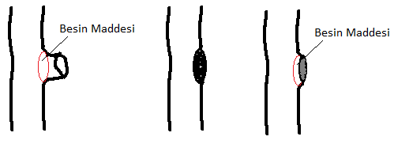
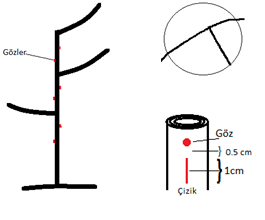
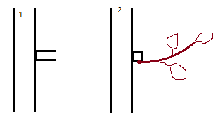
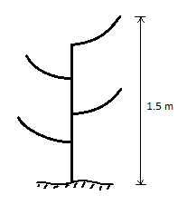
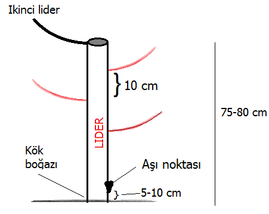
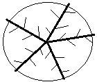
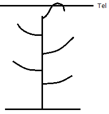
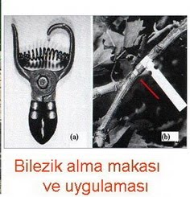

Budama Nedir?
Meyve ağaçlarının düzgün ve kuvvetli taç oluşturmalarını, uzun zaman kaliteli ve bol ürün vermelerini, verimden düşen ağaçların tekrar verimli hale getirilmeleri için, ağaçların toprak üstü organlarına uygulanan kesme, bükme, tomurcuk, sürgün ve yaprak alma işlemlerinin tümüne budama denir.
Budamanın Amaçları:
Meyve ağaçlarında gövde üzerinde düzenli ve dengeli bir taç oluşumunu sağlamak (Iskelet).
Meyve ağaçlarının bakımını, meyvelerin derimini (hasat) ve zararla savaş gibi teknik işlemleri kolaylaştırmak (Kontrol).
Kurumuş, hastalıklı, ekolojik ve mekanik etkilerle zararlanmış, kırılmış dallar ile birbirlerine zarar veren, dar açılı dalları yok etmek.
Meyve kalitesini iyileştirmek.
Işığın ağacın iç kısımlarına daha iyi girmesini sağlamak ve kaliteli yaprak yüzeyini arttırmak.
Şekillendirme devresinde budama işlemleri sürgün dallarına uygulanmalı, zorunlu olmadıkça meyve dallarına dokunulmamalıdır (Önce iskelet sonra meyve).
Budanacak olan ağaç toplu olarak incelenmeli ayrıca her dal ayrı ayrı ele alınmalıdır.
Gövde üzerinde tacı oluşturan ana dallar aynı yükseklikte ve eşit kuvvette olmalıdır. Ana dallar merkezi eksen etrafında eşit açılarla dağıtılmalı. Ana dalların gövde ile yaptıkları açılar 45 - 60o olmalıdır.
Ne kadar dik büyüme o kadar az ve geç meyvelenme, ne kadar geniş açılı büyüme o kadar çok meyvelenme getirir.
Dalları kısa kesmek vejetatif gelişmeyi, hiç kesmemek yada uzun bırakmak generatif gelişme faaliyetlerini teşvik eder.
Aynı noktadan yan yana büyüyen dalların gelişmesine izin verilmemelidir. Geniş açılı dal bırakılarak dar açılı olan çıkartılmalıdır.
Bir kesim yapar iken dikkat edilmesi gereken bazı noktalar vardır. Genellikle budamacılar kesim noktalarını doğru olarak tesbit etseler bile, kesim hataları yapılmaktadır.
Tepe kesimi yaparken: Dışa bakan bir göz üzerinden kesim yapılmalıdır. Çapı 0.5-2 cm olanlarda %3’lük bir eğim verilmelidir. Çapı 2 cm’nin üzerinde olan kesimlerde kesilen yüzey mutlaka aşı macunu ile kaplanmalıdır.
Seyreltme kesimi: Çıkarılacak olan dalın gövde ile birleştiği yerden, besin maddelerinin depolandığı şişkinliğin hemen üzerinden alınması gerekmektedir. Böylece kesim noktasında oluşan yara yeri çabucak kapanır.
Seyreltme kesimi, doğru-yanlış
Kesim noktasında tırnak bırakmamaya özen gösterilmelidir. Tırnaklı kesimler kolay kapanmadığı için bu noktadan aşağıya doğru kurumalar olmakta ve kapanmayan yara yerleri hastalık ve zararlıların ağaca girişini kolaylaştırmaktadır.
Budamanın bir ışık yönetimi olduğu unutulmamalıdır. En önemli noktalardan birisinin ağacın dengesini bozmamak kaydı ile iç kısımlara mümkün olduğu kadar çok ışık girmesini sağlamaktır.
Ağacın bir yanında dal oluşmadığı durumlarda:
 Kabuğun çizilmesiUyuyan gözün hemen altından steril bir jilet ile ortalama 1 cm boyunda kabuk çizilir (Oduna zarar verilmemeli, bir sonraki dönem cizik kapanacak şekilde).
Bir sürgünün çok kuvvetli veya yaşlanmış olduğu durumlarda yapılması gereken budama:
Böyle durumlarda üçgen kesim tekniği uygulanır.
 Üçgen kesim tekniği1.5 m boyunda ve çapı 1.5-2 cm olan, geniş açılı yan dal ihtiva eden fidanlardır.
 İdeal Fidan1 Yaşındaki Fidanın Latent Dönemi
 Bir yaşındaki fidanın latent dönemiFidanlar aşı noktaları toprak yüzeyinden 5-10 cm yukarıda kalacak şekilde dikilmelidir.
Aşı noktası güneye bakmalıdır (Hakim rüzgarlar yönünde dikim yapılmalıdır).
Fidanda dengeyi sağlamak amacıyla son göz aşı noktasının ters yönünde bırakılmalıdır.
İlk dikim yılında yapılacak olan budamada lider boyu 75-80 cm’den budanır. Böylece yarı bodur bir meyve ağacı elde etmiş oluruz. Kesim daha yukarıdan yapılır ise çeşitli kontrol, bakım ve onarım işlemleri zorlaşabilir.
Liderde tepe kesimi (dal oluşturamama veya hastalık gibi istisnai durmlar hariç) sadece dikim esnasında yapılır.
Dikim ile birlikte destek sistemi kurulmuş olmalıdır. Lider, uygun noktadan destek sistemine bağlanarak sabit durması sağlanır.
75-80 cm’den tepesi budanmış fidanlarda ilk bahar ile birlikte birinci katı oluşturacak gözler ve yan dallar meydana gelir. Bu sürgünlerden tepe noktasına en yakın olan dal ikinci lider dal olarak seçilir. Daha sonra oluşan sürgünlerden 4-5 adet iyi dal seçilir.
Seçilenlerin dışındakiler çıkartılır. Liderle rekabet edenler çıkartılır.
40 cm’nin altında kalan dallar çıkartılır.
Dik büyüyen dallar lider ile geniş açı yapacak şekilde desteklenir. Bu amaçla çamaşır mandalı, çıtalar, çubuklar kullanılabilir.
Meyve bahçelerinde liderin tepesi istisnai durumlar hariç (yan dal oluşmaması, yetersiz dallanma, cılız büyüme) dikim yılında budandıktan sonra tekrar kesilmez.
Liderin ucunda veya dallarda çiçek tomurcuğu oluşmuş ise uzaklaştırmak gerekir. Aksi taktirde çiçek tohumu liderin gelişimesini etkiler.
İkinci yılda yan dallarda 1/3-1/4 oranında kısaltma yapılmalıdır. Bu işlem dallar üzerinde ikinci dal oluşumunu sağlar.
Toprak seviyesinden itibaren 40-45 cm’den çıkan sürgünler uzaklaştırılır.
Özellikle kuvvetli gelişen çeşitlerde gelişmeyi azaltmak için daha az budama yapılmalı, her kesimin sürgün büyümesini teşvik ettiği unutulmamalıdır.
Dik sürgünler, kırılmış ve hastalıklı dallar çıkartılmalı.
İkinci yılda da ağaçlara açı genişletme işlemi tekrar yapılabilir.
Üçüncü yıl ağaçlar budanırken iskelet yapısına bakılır. Uygun bir iskelete sahip ise meyve gözlerine dikkat edilmelidir. Var ise uzaklaştırılmalıdır.
Yan dallarda 1/3 – 1/4 oranında kısaltma yapılabilir.
Dik sürgünler ve aşırı güçlü dallar çıkartılmalıdır.
Toprak seviyesinden itibaren 40 – 45 cm mesafeden çıkan dallar yok edilmelidir.
Önceki yıllarda yapıldığı gibi dalların açıları genişletilir.
(Verim çağı budaması)
Yarı bodur meyve ağaçlarının verim çağındaki boyu 3-3.5 m arasında olmalıdır. Ağaçlar bu yüksekliğe 4-5 büyüme sezonu sonunda getirilmelidir. Bu yüksekliğe daha çabuk ulaşan ağaçlarda lider baskı altına alınmalıdır.
4. Büyüme sezonunda ağaç dengeli bir taç oluşturmuş olur. Bu yıldan sonra kat iskeletini oluşturan dallar korunmalıdır.
Sık dallar, kurumuş ve kırılmış dallar çıkartılmalıdır.
Yan dallarda, zayıf dal üzerinden kısaltma kesimleri yapılmalıdır. Bu budama verime tam yatan ağaçlarda en çok kullanılan kesim şeklidir. Bu kesimler sonucunda çok daha verimli dallar elde edilir.
Geri kalan budama işlemleri, alt iskeleti oluşturan dalların periyodik olarak yenilenmesinden ibarettir. Yaşlanmış veya meyve yükünden olumsuz etkilenmiş olan bu dallar kısa kesimler veya üçgen kesimler ile çıkartılır.
Kış budama zamanı
(Yaprak dökümünden açımına kadar-uyanma)
Seyreltme
Kısaltma
Yaz budama zamanı
(Yaprak açımından dökümüne kadar-meyvenin kalitesini hedefliyoruz)
Bilezik alma
Çizme
Eğme-bükme-açı alma
Filiz alma
Yaz budaması
Yaz boyunca meyve ağaçlarında (ilk bahar dahil) sürgünlerin seyreltilmeleri, filiz alma, eğme-bükme, dalların açılarının genişletilmesi işlemlerinin tümüdür.
Yaz budamasında amaç
Meyvelerin kalitelerini arttırmak, daha iyi renklenmelerini sağlamak, kış aylarında yapılacak işlemleri azaltmak, derim işlemlerini kolaylaştırmak.
Kış budaması
Kışı ılık geçen yerlerde meyve ağaçlarının kış dinlenmesine girmelerinden hemen sonraki süre budama bakımından en uygun zamandır. Ancak kışı sert geçen yerlerde şiddetli donlardan önce budamanın yapılması doğru değildir.
Kış budamasında amaç
Ana dallarda,
* birim alandaki verim oranını arttırmak,
* kültürel işlemleri kolaylaştırmak,
* ağaçları kontrol altına almak,
* iskelet oluşturma,
* iskelet sağlamlaştırma,
* gelişmeye hazırlık
olarak sıralanabilir.
Sürgünün uygun bir yerinden kabuğun çepe çevre kesilip çıkarılması işlemidir. Kabuk kısmı kesilip çıkarılırken odun dokusuna zarar verilmez. Bileziğin genişliği 3-4 mm kadar olmalıdır. Bunu belirlemede yaranın kapanabilmesi esas alınır. Bilezik çok geniş alınır ise yara kapanamaz, ağaç zarar görür.
Bilezik almada amaç
Örneğin asmada yıllık sürgünlerde salkımların altından tane tutumundan sonra alınan bilezik, tane ve salkımların irileşmesini sağlar.
Etki şekli
Yapraklarda özümlenen maddelerin bilezik alınan yerin üzerindeki organlarda birikip alt kısma geçmemesine dayanmaktadır. Ancak tüm sürgün ve dallarda bilezik alınması, besin maddelerinin üst kısımlarda toplanması nedeni ile köklerin zayıflamasına neden olur.
Çizme
Uyuyan gözü uyandırmak için veya tomurcuğun sürmesini hızlandırmak için tomurcuğun altından kabuğun çizilmesi işlemidir.
Filiz alma
Genç ağaçlarda belirli bir bölgede gereğinden fazla sürgün oluşmuş ise bunların fazla büyümeden koparılmaları gerekmektedir. Özellikle genç ağaçlarda (1-7 yaş) uç kısımlarda oluşan fazla sürgünlerin filiz alma yöntemi ile uzaklaştırılması gerekmektedir. Böylece fidana düzgün bir şekil verilmiş ve birim alandaki kalite arttırılmış olur.